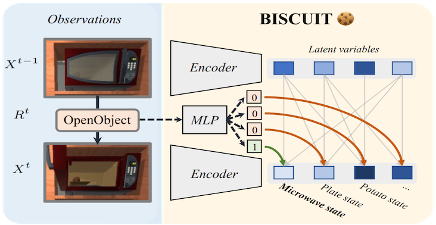
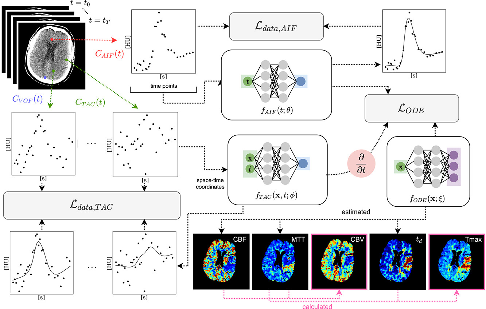

Efstratios Gavves
Associate Professor · Physical AI
University of Amsterdam
01
World Models &
Robot Learning
Robot Learning

Digital Twins · Embodied AI
- DreMa: Compositional World Models ICLR 2025
- CaPo: Cooperative Plan Optimization ICLR 2025
- Graph Switching Dynamical Systems ICML 2023
02
Causal Vision

Causal Representations · Interventions
- BISCUIT: Causal Rep. Learning UAI 2023
- CITRIS: Causal Identifiability ICML 2022
- ENCO: Neural Causal Discovery ICLR 2022
03
Mechanisms
& Safety
& Safety

Physics · Interpretability · Safety
- Mechanistic Neural Networks ICML 2024
- Mech. Interpretability for AI Safety TMLR 2024
- Modulated Neural ODEs NeurIPS 2023
04
Physical AI
for Biomedical
for Biomedical

Brain Stroke · Cancer · Neural Fields
- Physics-Inf. NFs for CT Perfusion MIDL 2024 ★
- Spatio-temporal Physics-Informed MeDIA 2023
- VISA: Video Object Segmentation ECCV 2024
Scroll